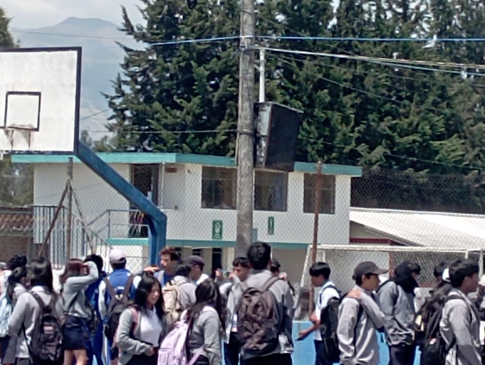

Departamento de Consejería Estudiantil (DECE.)
El DECE es un departamento dedicado a brindar apoyo emocional, social y académico a nuestros estudiantes. Nuestro objetivo es promover el bienestar integral y la salud mental de todos los alumnos, garantizando un ambiente escolar positivo.
Servicios Ofrecidos:
- Trabajo Conjunto con Familias:
- Colaboración con padres y tutores para fomentar una comunicación efectiva y un ambiente de apoyo en casa.
- Asesoramiento Personal:
- Sesiones individuales y grupales para abordar problemas emocionales, familiares o académicos.
- Orientación Vocacional:
- Asesoramiento en la elección de carreras y opciones educativas, ayudando a los estudiantes a planificar su futuro.
- Intervención en Crisis emocionales:
- Apoyo inmediato en situaciones de crisis emocionales, asegurando la salud y el bienestar de los estudiantes.
- Talleres y Charlas:
- Actividades educativas sobre temas como bullying, autoestima, manejo del estrés y habilidades sociales.

Regresar a la Página Principal